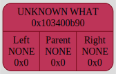
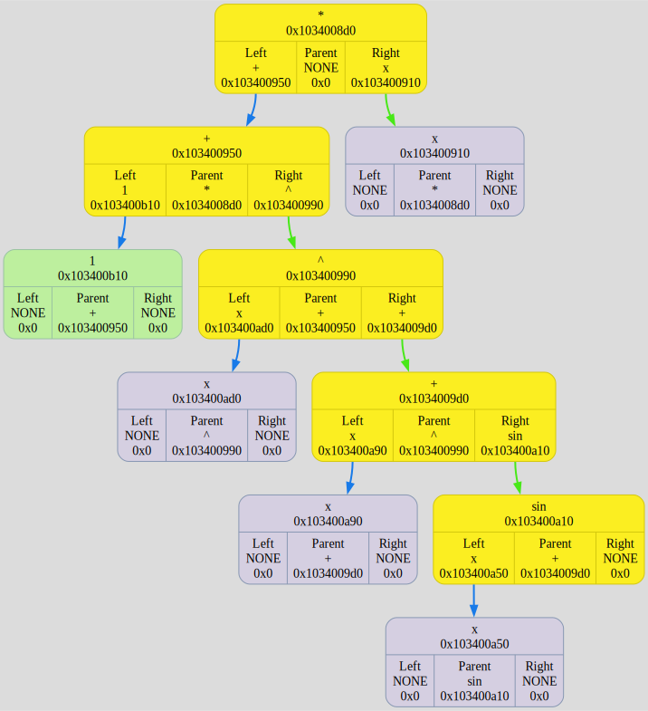
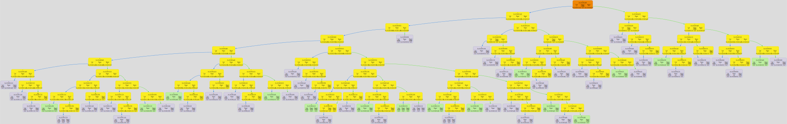

Colors meanings:
Binary Tree[0x16d26f1c0] born at "/Users/anatolij/Documents/GitHub/Differentiator/source/main.cpp": 9, name 'tree'
left subtree node
⮑ left subtree edge
right subtree node
⮑ right subtree edge
root node
⮑ unknown what edge
new node
unknown what node
DUMP #1: function TreeCtor was called from /Users/anatolij/Documents/GitHub/Differentiator/source/main.cpp: 10

Binary Tree[0x16d26ee80] born at "/Users/anatolij/Documents/GitHub/Differentiator/source/Differentiator_reader.cpp": 64, name 'tree'
DUMP #2: function RecursionReadExpression was called from /Users/anatolij/Documents/GitHub/Differentiator/source/Differentiator_reader.cpp: 67

DUMP #3: function RecursionReadExpression was called from /Users/anatolij/Documents/GitHub/Differentiator/source/Differentiator_reader.cpp: 67

DUMP #4: function RecursionReadExpression was called from /Users/anatolij/Documents/GitHub/Differentiator/source/Differentiator_reader.cpp: 67

DUMP #5: function RecursionReadExpression was called from /Users/anatolij/Documents/GitHub/Differentiator/source/Differentiator_reader.cpp: 67

DUMP #6: function RecursionReadExpression was called from /Users/anatolij/Documents/GitHub/Differentiator/source/Differentiator_reader.cpp: 67

DUMP #7: function RecursionReadExpression was called from /Users/anatolij/Documents/GitHub/Differentiator/source/Differentiator_reader.cpp: 67

DUMP #8: function RecursionReadExpression was called from /Users/anatolij/Documents/GitHub/Differentiator/source/Differentiator_reader.cpp: 67

DUMP #9: function RecursionReadExpression was called from /Users/anatolij/Documents/GitHub/Differentiator/source/Differentiator_reader.cpp: 67

DUMP #10: function RecursionReadExpression was called from /Users/anatolij/Documents/GitHub/Differentiator/source/Differentiator_reader.cpp: 67

DUMP #11: function RecursionReadExpression was called from /Users/anatolij/Documents/GitHub/Differentiator/source/Differentiator_reader.cpp: 67

DUMP #12: function RecursionReadExpression was called from /Users/anatolij/Documents/GitHub/Differentiator/source/Differentiator_reader.cpp: 67

DUMP #13: function RecursionReadExpression was called from /Users/anatolij/Documents/GitHub/Differentiator/source/Differentiator_reader.cpp: 67

DUMP #14: function RecursionReadExpression was called from /Users/anatolij/Documents/GitHub/Differentiator/source/Differentiator_reader.cpp: 67

Binary Tree[0x16d26f1c0] born at "/Users/anatolij/Documents/GitHub/Differentiator/source/main.cpp": 9, name 'tree'
DUMP #15: function TreeDtor was called from /Users/anatolij/Documents/GitHub/Differentiator/source/main.cpp: 17